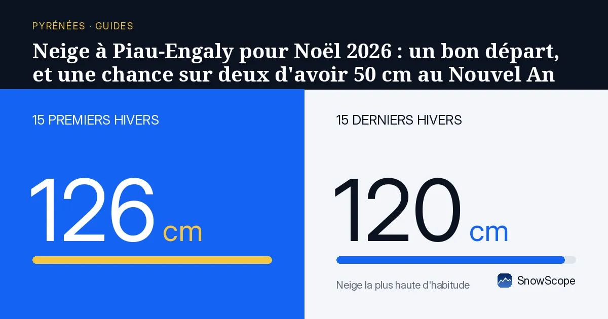

Neige à Piau-Engaly pour Noël 2026 : un bon départ, et une chance sur deux d'avoir 50 cm au Nouvel An
Piau-Engaly aborde décembre avec 28 cm en haut des pistes et 16 cm à 2 144 m, un peu plus qu'une fin novembre habituelle (13 cm). Pour Noël, l'histoire invite à la prudence : le 25 décembre, la hauteur habituelle est de 40 cm, et seuls 43 % des 46 derniers hivers avaient 50 cm au 1er janvier.
Consultez les prévisions neige en temps réel pour Piau-Engaly sur l'application SnowScopeHauteurs de neige, alertes poudreuse et carte 3D, gratuitement.
La neige de la semaine
Mercredi et jeudi ont apporté 18 cm puis 12 cm, soit 28 cm en trois jours et 48 cm sur la semaine. Le week-end est sec ; dimanche, deux ou trois centimètres au mieux sur les crêtes. Avec le froid, la neige tient, et les enneigeurs peuvent compléter les pistes de retour.
Le domaine s'étend de 1 762 m à 2 527 m, ce qui en fait la plus haute station des Pyrénées françaises : c'est l'argument principal pour un séjour de début d'hiver.
Semaine par semaine jusqu'aux fêtes
À 2 144 m, la hauteur habituelle est de 24 cm le 8 décembre, 26 cm le 15 décembre, 32 cm le 20 et 40 cm le jour de Noël. Le 1er janvier, elle monte à 46 cm. En temps normal, une couche de 30 cm s'installe vers le début décembre.
La dispersion est grande : un Noël sur quatre a moins de 18 cm, un sur quatre plus de 58 cm. C'est le propre des Pyrénées, où quelques grosses chutes font la saison.
Pourquoi Piau garde sa neige
La station est orientée vers le nord et l'est, au fond de la vallée d'Aure, ce qui la protège du soleil d'hiver et des redoux venus d'Espagne. Son altitude fait qu'il neige souvent à Piau quand il pleut à Saint-Lary-village. Ce sont ces deux atouts qui expliquent sa réputation de station sûre en début de saison.
Le meilleur hiver des 46 derniers, 2013-14, a culminé à 207 cm ; le plus faible, 1992-93, à 44 cm. Le mois le plus enneigé est généralement février, autour de 90 cm.
Les fêtes à Piau
Piau est une station skis aux pieds, avec la plupart des appartements au bord des pistes : pour une famille, c'est une semaine de Noël sans voiture. Le revers : peu de lits, et des réservations qui partent vite quand l'enneigement est bon début décembre.
Pour une semaine plus variée, Saint-Lary est à une vingtaine de minutes en voiture, et l'Espagne, par le tunnel d'Aragnouet-Bielsa, ouvre la porte de l'Aragon.
Questions fréquentes
La station sera-t-elle entièrement ouverte à Noël ? Cela dépend de la neige de décembre. Avec une base naturelle correcte et le froid de cette semaine, les secteurs hauts devraient être skiables ; les pistes les plus raides demandent davantage de neige.
Faut-il préférer le Nouvel An ? Un peu, statistiquement : la hauteur habituelle passe de 40 cm le 25 décembre à 46 cm le 1er janvier à 2 144 m.
Que faire hors ski ? Le balnéo de Saint-Lary, la raquette dans la réserve du Néouvielle toute proche et les villages de la vallée d'Aure remplissent facilement une demi-journée.
Que faut-il espérer de décembre ?
Le point de départ est bon : 16 cm à mi-pente fin novembre, c'est déjà la hauteur d'un 8 décembre normal. Si décembre apporte seulement sa part habituelle de neige, Noël sera au moins dans la moyenne. Sinon, la neige de culture et l'altitude permettent en général de skier les pistes principales.
La page enneigement de Piau-Engaly donne chaque jour la neige en bas, au milieu et en haut du domaine.
Conseils aux skieurs
- Réservez tôt pour la semaine de Noël : les lits au pied des pistes sont rares.
- La route d'Aragnouet impose les équipements hiver ; vérifiez l'état de la route avant de partir.
- Le matin, les pistes exposées au nord sont dures : commencez par les secteurs au soleil vers 10 h.
- Pour comparer : notre guide de Piau-Engaly et la page Pyrénées.
À propos de ces chiffres
Chiffres de neige : la carte et la prévision SnowScope du jour, et notre historique de 46 hivers passés pour chaque station (une estimation pour la zone, pas le bulletin de la station).
Bulletins d'avalanche officiels: Météo-France – Bulletin d'estimation du risque d'avalanche
Citer ce bulletin
Pour la recherche, l'enseignement ou la presse : chiffres et graphiques réutilisables librement sous CC BY 4.0 avec cette citation.
SnowScope (2026), Neige à Piau-Engaly pour Noël 2026 : un bon départ, et une chance sur deux d'avoir 50 cm au Nouvel An, https://snowscope.app/blog/fr/2026/11/piau-engaly-noel-2026-neige-chances-46-hivers-plus-haute-station-pyrenees.html, consulté le 2026-11-27
SnowScope (Atlas Labs). (2026, November 27). Neige à Piau-Engaly pour Noël 2026 : un bon départ, et une chance sur deux d'avoir 50 cm au Nouvel An. SnowScope snow reports. https://snowscope.app/blog/fr/2026/11/piau-engaly-noel-2026-neige-chances-46-hivers-plus-haute-station-pyrenees.html
BibTeX
@misc{snowscope2026piauengalynoel2026neigec,
author = {{SnowScope (Atlas Labs)}},
title = {Neige à Piau-Engaly pour Noël 2026 : un bon départ, et une chance sur deux d'avoir 50 cm au Nouvel An},
year = {2026},
month = nov,
howpublished = {\url{https://snowscope.app/blog/fr/2026/11/piau-engaly-noel-2026-neige-chances-46-hivers-plus-haute-station-pyrenees.html}},
note = {Published 2026-11-27 18:59 UTC; accessed 2026-11-27}
}· CC BY 4.0 · Méthodes, données et outils →
Piau-Engaly : neige et température selon l'altitude, cet hiver vs l'hiver dernier (outils) →
Suivre Piau-Engaly
Gratuit : un message quand la neige arrive, et la météo chaque matin.
Autres bulletins neige

Trois hivers maigres d'affilée ont pris fin en 2025-26 ; cet automne a commencé normalement.

Poudreuse fraîche dans trois stations des Pyrénées, neige mince partout, et journées chaudes qui risquent de former une croûte. Voici ce qu'il faut emporter et porter le 14 novembre.

Piau-Engaly domine la prévision avec 37 cm de neige fraîche d'ici le 13 novembre ; 24 cm sont attendus le 12 novembre.